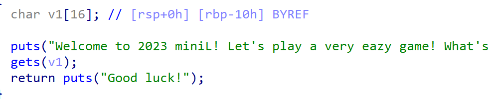
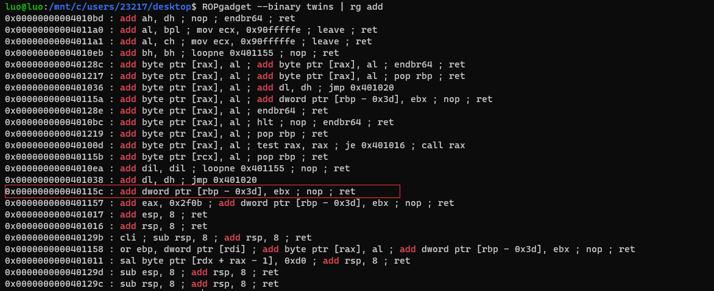
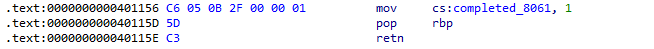

mini-L 2023 复现
给上半年填个坑.
0x00
11.4打了一个叫鹏城杯的比赛, 里面有一道题是无输出函数的栈溢出, 经过高人指点发现是和miniL-twins一样的东西, 这才想起来 当时根本就没有复现到这里, 忘记是彻底不会做还是被诸如期末考试什么的东西折磨了, 然后来来回回, 卡在这了, 又拖拖拖, 就到了现在了.
本来想说点什么东西, 但是又觉得没什么好说的, 就这样吧
0x01 twins

本身是一个骑脸的栈溢出, 在minil中这个题用了个脚本, 起了2个程序, 检测输出是否一样.
pc杯是直接把所有输出函数直接去掉, 只有一次输入的机会, 还加了个orw.
当时做miniL的时候还在想什么办法绕, 这次直接开始找什么特殊的leak手段, 根本就没想到miniL还有这
无输出, 意味着我们没有泄露的机会, 只能以一种间接的方式去硬跑libc里面的函数:
- 内存中是有libc地址的, 举个最简单的例子就是bss段上的stdout等, 且bss段可读可写
- 在程序不开pie的时候, bss里的这段libc地址我们是已知的, 同时也可以得知与其他函数的偏移
- 在 “ret2csu” 这种手法中, 我们可以做到用2段gadget布置参数且直接使用call调用, 非常强大
那如果我们找到一些手段, 可以通过已知的偏移来对内存中的地址加以计算&调用, 那便省去了leak这一步骤
但是在这两道题当中, 采用一些标准化的手段并不能找到这么一种方式, 内存当中的gadget很规整, 几乎不会有这种机会, 这时候利用一些工具可以找到这样的一个gadget:
add dword ptr [rbp - 0x3d], ebx ; nop ; ret

这个地方如果去打开ida的汇编查看的话, 是一句很明朗的语句:

但是在上图ROPgadget的查找中, 我们使用grep/rg去查找的话, 便可以突破固有的指令, 实现错位.
这个地方后续查了查别的wp, 很多人把这个东西叫做 “magic_gadget”, 我觉得还挺贴切的
并且看上去这种gadget的功能也比较强大, 我反正觉得肯定不只这一个能派上点用场, 又学废了
在我们足以控制ebx和rbp的时候, 这个gadget的功能就似乎非常强大, 因为在ret2csu中就直接存在pop rbx; pop rbp, 普遍的偏移应该少有超过四个字节的, 所以在这里对libc而言效果甚至等同于一个任意地址写.
twins这道题当中利用比较简洁, 只需要用两次add写入一个/bin/sh, 再add出一个偏移调用system, 中间控制一下参数即可, 同时这道题还是使用gets函数, 不限制输入长度, 一次性写好通了即可.
但是在pc杯这个题中, 第一次控制了输入长度0x100字节, 还要orw, 难度稍微要高出一些:
- 第一次输入之后要迁移, 构造出一个很大的bss段输入.
- 第二次输入可以直接构造三段csu调用进行orw, 只是要多次进行控制参数, 看起来繁琐, 但实质是重复操作.
放一个pc杯的题和exp, minil这个属于第一层, pc杯相对来讲是第二层, 思路一致, 很有说法.
链接：https://pan.baidu.com/s/1K3731YqV5HagDgVE40eyzA
提取码：aqot
1 | |
这里说点题外话:
首先是
废话 刚需libc算偏移 pc杯是2.27的libc, 小版本1.5再其次是, 如果这个题不开got表保护, 实际上应该是可以通过ret2dlresolve做的, (
minil有非预期, 但是pc杯就似乎很幽默的开了一个Full RELRO, 只能采用相对偏移去做,👴的评价是 彳亍8️⃣
0x0? Others
之前断断续续的复现过了一两道, 剩下大概三道, twins刚刚调完, 剩下两个似乎短时间还跟我无关,
但是慢慢学, 慢慢复现, 慢慢写, 估计也应该花不上特别多的时间吧, 希望不要🕊了.
不知道等到把这几个题的手法都拿下的时候 会不会真的有一种放松感呢 ~